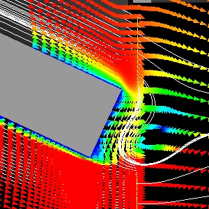
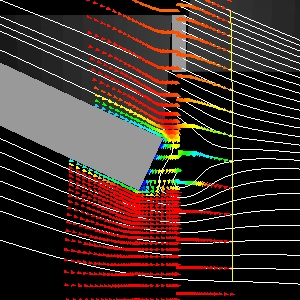
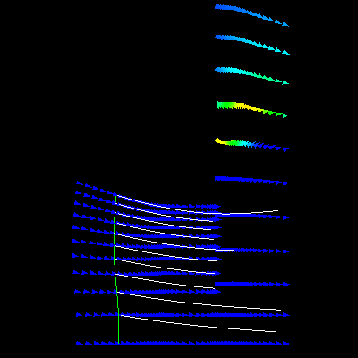
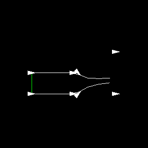
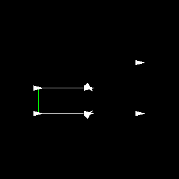
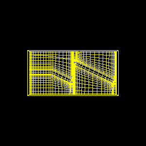
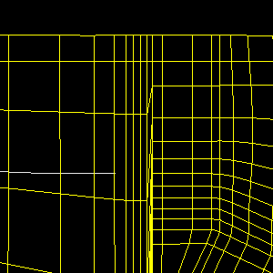
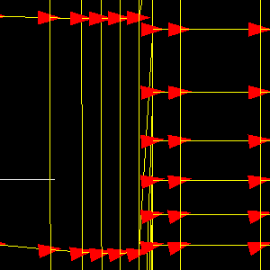

 
The glyphs in the right image are on a subgrid, subsampled by 2 in the vertical. The seeds for the streamlines are a single "line" (colored in yellow) sampled from the original SGrid. (Integration is done both forward and backward). In the left image, the seed line is to the left of the discontinuity; in the right image, the seed line is to the right.
Question: why does a streamline seem to pass over the discontinuity only if going from a less (vertex) dense region to a more or equally dense region?

Here's the (gzipped ASCII) StructGrid data file, Kgrid.vtk.gz.
Here's a Python script Kgrid.py to read the data
and display the above image.
The following simple example illustrates this (simpler.py, simpler.vtk). In the second image, there are 2 pairs of vertices that coincide, causing the streamline alg to terminate. In the first image, these points are separated slightly, and the streamline proceeds normally.
 
Continuing the saga, I've offset the coincident vertices of the grid, but still have problems with the streamlines terminating early:
Here's the gzipped data file, smallerGrid.vtk.gz.
Here's a Python script, stream1.py, which
extracts/displays a slice of the struct grid and generates a single streamline.
  
The streamline terminates early with a traceback:
vtkStreamer.cxx:
// Calculate the next step using the integrator provided
if (integrator->ComputeNextStep(pt1.x, pt1.v, xNext, 0, step)
== -1)
{
break;
}
vtkRungeKutta2.cxx:
// Obtain the derivatives at x_i + dt/2 * dx_i
if (!this->FunctionSet->FunctionValues(this->Vals, this->Derivs))
{
return -1; // <-----------------
}
vtkInterpolatedVelocityField.cxx:
this->LastCellId =
this->DataSet->FindCell(x, this->Cell, this->GenCell, -1, 0,
subId, this->LastPCoords, this->Weights);
if (this->LastCellId != - 1)
{
this->DataSet->GetCell(this->LastCellId, this->GenCell);
}
else
{
return 0; // <---------------
}
vtkPointSet.cxx:
rwh> (vtkPointSet::FindCell) #3
rwh> (vtkPointSet::FindCell) -----
rwh> (vtkPointSet::FindCell) #4
//sometimes the initial cell is a really bad guess so we'll
//just ignore it and start from scratch as a last resort
if ( initialCellProvided )
{
printf("rwh> (vtkPointSet::FindCell) #3\n");
return this->FindCell(x, NULL, gencell, cellId, tol2,
subId, pcoords, weights);
}
else
{
printf("rwh> (vtkPointSet::FindCell) #4\n");
return -1;
}